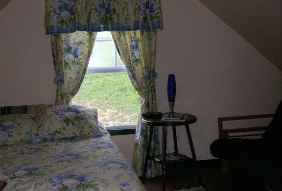
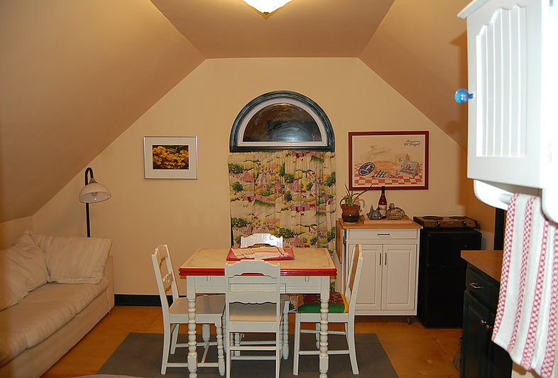
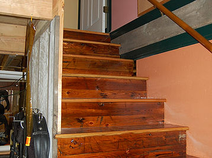
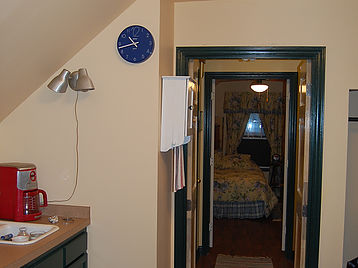
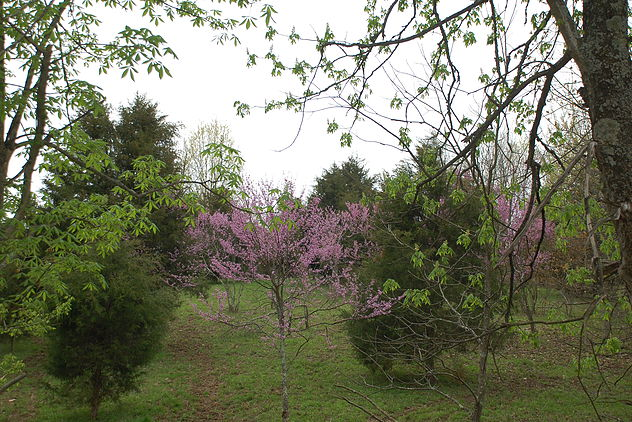

A Glimpse of the Carriage House Retreat
- 
- 
- 
- 
- 
It's a perfect place to just relax. Enjoy the countryside (no, it's not really near anything)! Cuddle with the ponies, marvel at the sheep, learn about the coexistence of all the various critters occupying this 150 acres of Kentucky paradise. Let the kids play in the creek. They'll want to stay there the whole time. They can pluck eggs from the nests in the henhouse and you can eat them for breakfast! They can help with chores if they want, and will learn that mud really doesn't hurt at all, and it's fun to play in.
Kokovoko has been home to the continent's largest herd of Gotland ponies for over 25 years. They live as a big herd, and you can be right there in the middle of it. Accompanied, of course. And if Leslie's driving while you're here, you're welcome to don a helmet and jump on the carriage, too. It's lots of fun.
As for space, there are two rooms. One has a queen bed and full futon, and the other has a small kitchen, table, sofa and twin futon. Comfortably sleeps four or five, depending on ages. The shower is small, but functional. I don't cook for you, but you have everything you need to make basic meals, coffee and tea, etc. There's a small fridge, cooktop, and microwave, and all your dishes and linens are provided.
I'll give you a farm tour, then you can go off on your own... hike, bike, play and explore! We're a half hour from Georgetown, KY or the Kentucky Horse Park in Lexington. Come and bring the family. It's a great adventure.